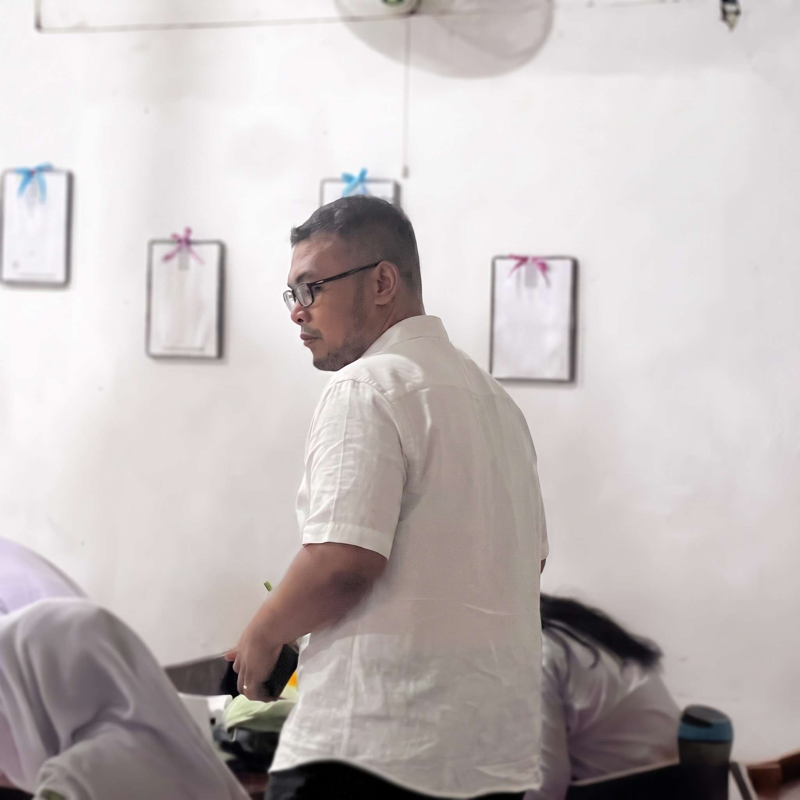
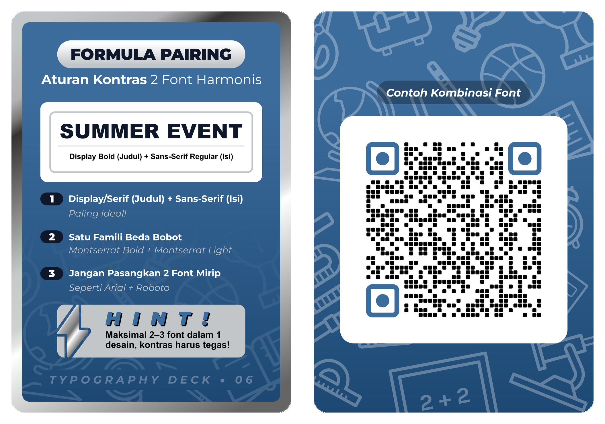

Dokumentasi komprehensif pelaksanaan Praktik Pengalaman Lapangan (PPL) Mandiri & Terbimbing Program Studi Pendidikan Profesi Guru (PPG) Calon Guru Gelombang 1 Tahun 2026, Bidang Studi Desain Komunikasi Visual (DKV) di SMKS Koperasi Yogyakarta. Memadukan pedagogi among Tamansiswa (Tri-Nga: Ngerti, Ngrasa, Nglakoni) dengan solusi media cetak taktil Phygital Typography Deck.

Calon Guru Profesional Bidang Studi Desain Komunikasi Visual
Pendidikan kejuruan DKV bukan sekadar penguasaan tombol perangkat lunak grafis, melainkan pembinaan rasa estetik, kepekaan memecahkan masalah visual, dan etos kerja studio yang memuliakan martabat murid.
Murid memahami anatomi huruf, klasifikasi jenis tipografi (Serif, Sans Serif, Script, Display), dan prinsip keterbacaan visual secara kognitif melalui pengamatan langsung pada kasus desain riil.
Melalui diskusi kelompok kecil di meja studio, murid merasakan harmoni kontras ukuran teks, kepribadian huruf yang selaras dengan tema pesan, serta kenyamanan mata audiens saat membaca tata letak.
Murid secara mandiri mengeksekusi karya poster promosi komersial menggunakan aplikasi Canva di smartphone masing-masing, mematuhi batas tenggat waktu, dan memvalidasi karya melalui review sejawat.
Kelas X DKV (Rabu - 8 JP): Praktik Tipografi Dasar diselenggarakan di ruang kelas reguler (tanpa laboratorium komputer). Keterbatasan sarana dijembatani dengan menghadirkan media cetak kartu taktil Phygital Typography Deck dan aplikasi grafis mobile (Canva), menata ruang kelas menjadi 7 studio melingkar yang dinamis.
Kelas XI DKV (Jum'at): Praktik mata pelajaran Desain Publikasi dilaksanakan secara Team Teaching bersama Guru Pamong (Ibu Mela Dina Arumsari, S.Pd., Gr., M.Pd.) di Laboratorium Komputer menggunakan perangkat lunak standar industri (Adobe Illustrator).
Penyesuaian 26 - 29 Oktober 2026: Selama pelaksanaan Tes Kemampuan Akademik (TKA) Kelas 12, jam praktik dialihkan ke agenda Micro Teaching bersama Rekan Sejawat PPL (Ulfah Nabillah, S.Ds.) atas persetujuan resmi Guru Pamong.
Dokumentasi pemetaan lingkungan belajar SMKS Koperasi Yogyakarta pada minggu pertama praktik (Topik 1 & Topik 2).
Dokumentasi penyambutan pagi 5S (Senyum, Salam, Sapa, Sopan, Santun) bersama guru piket dan penertiban kehadiran murid tepat pukul 07.00 WIB.
Klik untuk melihat catatan penempatan gambarDokumentasi penataan ruang kelas reguler X DKV menjadi 7 kelompok studio kerja melingkar (@ 4 murid) untuk kolaborasi perancangan desain Canva.
Klik untuk melihat catatan penempatan gambarPerjalanan transformasi peran dari Co-Pilot terbimbing bersama Guru Pamong hingga Pilot Utama KBM mandiri 4 siklus berorientasi standar ketuntasan KKTP 70.
🗓️ Rabu, 16 September 2026 • 8 JP Tatap Muka
Mengajar di bawah supervisi langsung Ibu Mela Dina Arumsari. Fokus pada pembedahan kasus poster ekstrem via proyektor (poster konser metal vs produk balita) untuk menumbuhkan kesadaran bahwa huruf memiliki kepribadian dan target audiens.
"Murid SMK jangan dibebani hafalan definisi teks yang kaku, melainkan asah kepekaan rasa memilih jenis font. Kawal tugas murid secara persisten dan jangan sungkan men-tag langsung murid di WhatsApp Group agar disiplin tenggat waktu."
Dokumentasi pendampingan Bu Mela Dina Arumsari di kelas X DKV saat pemaparan proyektor materi kontrak belajar tipografi.
🗓️ Rabu, 23 September 2026 • 8 JP Tatap Muka
Penerapan perdana media cetak kartu Phygital Typography Deck pada 7 tim studio. Murid membedah kartu panduan fisik tanpa membuka peramban gawai secara berulang, sehingga kendala device lag tereliminasi.
Ketuntasan kognitif melonjak dari 10,71% (pra-siklus) menjadi 64,29% (18 dari 28 murid mencapai KKTP 70). Rata-rata nilai praktik Canva mencapai 79,86 dengan ketuntasan 87,50%.
Dokumentasi murid aktif berdiskusi memegang kartu fisik Phygital Deck sambil membuka template Canva di smartphone.
🗓️ Rabu, 07 Oktober 2026 • 8 JP Tatap Muka
Penyempurnaan kartu panduan dengan penanda rasio proporsi numerik (skala 1:2:3 / Headline 100% - Subhead 50% - Body 25%). Murid merancang variasi font pairing komersial kuliner dan UMKM.
Pengosongan data murid yang tidak hadir/mengumpulkan tugas secara berturut-turut dikalibrasi ketat. 17 murid tuntas menghasilkan karya pairing yang memenuhi standar kenyamanan baca.
Dokumentasi bimbingan meja per meja (desk coaching) mengoreksi kontras ketebalan font dan whitespace poster murid.
🗓️ Rabu, 14 Oktober 2026 • 8 JP Tatap Muka
Setiap murid merancang poster promosi komersial secara mandiri dengan integrasi formula Phygital Deck. Dilanjutkan sesi kritik karya antarteman (peer tutoring) untuk memvalidasi alur baca audiens.
Ketuntasan kognitif mencapai puncaknya di angka 89,29% (25 dari 28 murid tuntas KKTP 70) dengan nilai rata-rata kelas 77,43 dan skor N-Gain 0,62 (kategori Cukup Efektif).
Dokumentasi murid saling menukar smartphone untuk memeriksa keterbacaan teks poster rekan sekelompoknya.
🗓️ Rabu, 21 Oktober 2026 • 8 JP Tatap Muka
Finalisasi ekspor karya grafis beresolusi tinggi, pameran mini karya di layar proyektor kelas, serta pengawalan tunggakan tugas via WhatsApp Group hingga tercapai 100% partisipasi murid yang hadir.
Rata-rata keterampilan desain Canva murid mencapai skor 86,00 dengan ketuntasan 91,30% (21 dari 23 murid yang mengumpulkan karya tuntas melampaui KKTP 70).
Dokumentasi pameran hasil desain poster murid terpilih yang diproyeksikan ke layar kelas sebagai apresiasi karya.
Kanal dokumentasi rekaman video pelaksanaan KBM praktik mengajar mandiri dan terbimbing di SMKS Koperasi Yogyakarta.
Dokumentasi pelaksanaan KBM praktik mengajar mandiri di ruang kelas reguler dengan penerapan media cetak taktil Phygital Typography Deck dan Canva Mobile.
Dokumentasi kolaborasi praktik mengajar terbimbing bersama Guru Pamong (Mela Dina Arumsari, S.Pd., Gr., M.Pd.) di laboratorium komputer menggunakan Adobe Illustrator.
Artikel Ilmiah: "Peningkatan Pemahaman Konsep dan Keterampilan Tipografi Melalui Media Phygital Typography Deck pada Murid Kelas X DKV" (14 Kata Resmi).
Media Phygital Typography Deck merupakan 8 kartu panduan fisik berukuran ringkas yang memuat intisari formula tipografi profesional: klasifikasi anatomi huruf, hierarki visual teks, rumus perbandingan rasio ukuran, serta kurasi pasangan font harmonis. Media ini dirancang khusus untuk mengatasi kendala device lag gawai murid dan ketiadaan lab PC di ruang kelas reguler.

Gambar 1: Desain Kartu Phygital Typography Deck (Publikasi Jurnal Ilmiah)
Dokumentasi kelompok murid memegang kartu Phygital Deck sambil mencocokkan formula huruf pada layar Canva smartphone.
Partisipasi aktif dalam operasional sekolah mitra, penegakan kedisiplinan 5S pagi melalui piket gerbang, tim juri lomba desain maskot dan gunungan seni budaya, serta pemateri workshop visual K3 industri dan aplikasi TAKAGI.
| No | Hari / Tanggal | Alokasi Waktu | Uraian Kegiatan Non-Mengajar | Beban (JP) |
|---|---|---|---|---|
| 1 | Senin, 07 Sep 2026 | 06.30 - 07.15 WIB | Piket Gerbang | 2 JP |
| 2 | Rabu, 09 Sep 2026 | 06.30 - 07.00 WIB | Piket Gerbang | 1 JP |
| 3 | Jum'at, 11 Sep 2026 | 06.30 - 07.15 WIB | Piket Gerbang | 2 JP |
| 4 | Senin, 14 Sep 2026 | 06.30 - 07.15 WIB | Piket Gerbang | 2 JP |
| 5 | Rabu, 07 Okt 2026 | 08.00 - 12.00 WIB | Tim Juri Lomba Desain Maskot dan Gunungan HUT Kota Yogyakarta ke-270 | 4 JP |
| 6 | Senin, 12 Okt 2026 | 06.30 - 07.15 WIB | Piket Gerbang | 2 JP |
| 7 | Rabu, 14 Okt 2026 | 09.00 - 12.00 WIB | Pemateri Workshop Visual Safety Campaign & Aplikasi TAKAGI (Projek Kepemimpinan B) | 3 JP |
| 8 | Jum'at, 23 Okt 2026 | 06.30 - 07.15 WIB | Piket Gerbang | 2 JP |
Dokumentasi mahasiswa bertindak sebagai juri kompetensi estetika desain maskot dan gunungan karya murid SMK Koperasi.
Dokumentasi mahasiswa memaparkan materi kampanye visual K3 dan operasional aplikasi TAKAGI di laboratorium komputer.
Seluruh berkas administrasi, lembar kerja orientasi, observasi, refleksi siklus, laporan non-mengajar, hingga naskah artikel ilmiah PTKK telah diselaraskan dengan standar KKTP 70 dan siap diekspor menjadi format PDF.
Laporan observasi visi-misi, tata tertib, kultur 5S, manajemen sekolah, dan legalitas penerjunan di SMK Koperasi Yogyakarta.
Identifikasi karakteristik 28 murid kelas X DKV, pemetaan gaya belajar kinestetik-visual, dan adaptasi pembelajaran gawai mobile.
Refleksi KBM terbimbing peran Co-Pilot bersama Bu Mela Dina Arumsari, orientasi kontrak belajar, dan studi kasus poster ekstrem.
Penerapan perdana media Phygital Deck, penataan 7 studio meja melingkar, dan evaluasi ketuntasan kognitif 64,29%.
Eksperimen font pairing komersial, penerapan rasio proporsi numerik (skala 1:2:3), dan bimbingan meja per meja.
Proyek poster promosi mandiri di Canva Mobile, peer tutoring antarteman, dan pencapaian ketuntasan KKTP 89,29%.
Gelar karya mini studio via proyektor kelas, penuntasan tunggakan tugas via WhatsApp Group, dan evaluasi praktik 86,00.
Rangkuman komprehensif pelaksanaan praktik mandiri peran Pilot Utama sepanjang 4 siklus tindakan KBM di kelas X DKV.
Laporan resmi pelaksanaan kegiatan non-mengajar (18 JP), meliputi piket gerbang rutin, tim juri lomba maskot seni budaya, dan pemateri workshop TAKAGI.
Sintesis menyeluruh pertumbuhan 4 kompetensi guru, refleksi pedagogik Tamansiswa, dan pengesahan resmi DPL Drs. Triyono, M.Sn.
Naskah publikasi ilmiah (14 kata judul resmi) kolaborasi bersama Bu Mela Dina Arumsari dan Pak Triyono berpatokan KKTP 70.
Perangkat pembelajaran lengkap Pertemuan 3 & 4 Fase E Dasar-Dasar DKV, dilengkapi materi tayang, bahan ajar, dan LKM 1-3.